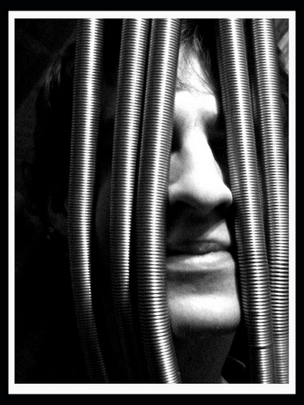

🎨 Наше творчество
Егор Новожилов: С помойки часто жрал, но в основном питаюсь дешёвой пищей из супермаркетов
Егор Новожилов: С помойки часто жрал, но в основном питаюсь дешёвой пищей из супермаркетов
Егор Новожилов: С помойки часто жрал, но в основном питаюсь дешёвой пищей из супермаркетов
Егор Новожилов: С помойки часто жрал, но в основном питаюсь дешёвой пищей из супермаркетов
Егор Новожилов
...
Ну вот, значится, идём мы с Егором Летовым по трамвайным рельсам.. И вот, значится, увидел он солнце...
- А ты веришь ваще в путешествия во времени, - спрашиваю.
- Допускаю, - говорит Летов, щурясь куда-то вдаль.
Его волосы были длинными, тонкими и слишком сальными, такими что блестели на солнце. Мы недавно с ним познакомились, но были, так сказать, уже на "долгой ноте".
- А что, если я тебе скажу, что я из будущего?
- Допускаю, - невозмутимо отвечает тот и добавляет, - а там кошки есть ещё?
- Есть, говорю, наглые непомерно!
- Ну, то ли дело в наше время, - смеётся он.
Потом он на минуту задумывается, грустнеет и смотрит вдаль на пустой заброшенный трамвайный вагон и вдруг спрашивает:
- А счастье в будущем есть?
Я не нашёлся что ему ответить, так что мы просто молча пошли дальше по трамвайным рельсам, всё ближе и ближе к трубам у начала той кольцевой дороги.
- А вообще, говорю я, - вот под ногами земля, а будущего нет.
- Возможно, отвечает он, - а возможно, скоро наступит совсем...
Вся его куртка была искалена булавками так, что живого места не оставалось. А он всё шёл и щурился на солнце.
Степан Мамакин
Свобода
Кто бы мог подумать, что может существовать что-то кроме этих чёртовых пружинок?! Куда бы ты ни шёл — в школу, в банк, на почту, в магазин — везде встречаешь препятствие в виде этих пружинок! Они начинаются где-то в бесконечной выси и уходят в глубину планеты...
...Невдалеке от киоска (сквозь пружинки, разумеется) я заметил что-то тёмное... это толпа. В кругу собравшихся ротозеев новый мессия утверждал, что знает, как оказаться в мире без пружинок. Этот бред будоражил умы многих поколений уже не одно столетие. Но в этот раз толпа не услышала ничего нового и потихоньку начала расходиться. Но я всё же надеюсь, что объявленное "царство без пружинок" — не обман. Я подхожу к пророку и мы знакомимся. Андрей (так он представился) высказал желание вести меня ТУДА хоть сейчас, ему нужна только моя вера. Ну что же, я готов.
Долго ли, коротко ли, но после нескольких тяжёлейших километров пути, весь в крови и лохмотьях, я спрашиваю Андрея: «Где твой рай, мессия?» «Я знаю, где мой рай, а вот где твой рай?» — вопросом на вопрос ответил Андрей. «Где угодно, только не здесь!» «А между тем, тебе осталось сделать 10 шагов», — ответил Андрей. Я напрягаю последние капли веры и, раздвигая пружинки, просачиваюсь сквозь них и считаю шаги. 1... 2... 3... ...8... 9... 10... Что-то ослепительное ударило в глаза. Огромная сверкающая, слегка шевелящаяся поверхность разлеглась до горизонта. И солнце, огромное солнце! И ни одной пружинки! Я огляделся в поисках Андрея, но его уже не было... Солнце и море! Я втянул поглубже солёный воздух, покачнулся и упал на песок. Свобода!!!
Степан Мамакин, раннее утро 12 января 2005 года, Омск.
Интересный факт: человек на фото — лидер группы "Восстановительная Сила" (Омск)
Егор Новожилов
Вот, значит, пили мы с ним чай. Заварили, значит. Чай был сладкий и тягучий. И горячий был очень этот чай. Вот я всё дую на него, а он улыбается.. И вдруг он взял и остыл. Ко мне...
2024 г.
Степан Мамакин
Рисунок Степана Мамакина, 8 июня 2025 года, Мончегорск